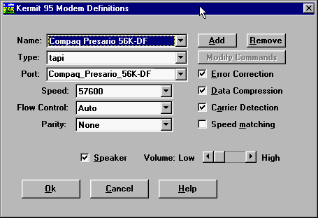
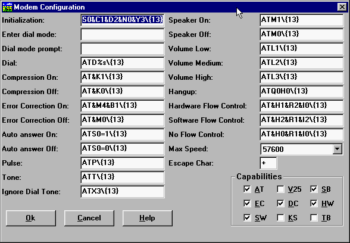

K95 Dialer - Modem Definitions
Please refer to Using C-Kermit, Chapter 4, for a thorough
explanation of Kermit 95's handling of modems, and to Appendix I for a
technical overview of modems and serial communications.

Adding a New Modem
To add a new modem, click on Add. A little text box pops up into which you
can type the name for your new modem. The name can contain spaces. Click on
OK if you want to keep it, otherwise Cancel.
Now you're back on the Modem Definitions page. If your new modem type is one
of Kermit's built-in types, and you want to use Kermit's built-in commands for
it, choose it from the Type list, otherwise choose "tapi" to use TAPI's
commands. Or, if you want to define your own commands, choose User-Defined.
Then fill in the COM port. COM1-COM8 are listed in the dropdown list; if your
modem is on a higher-numbered COM port, just highlight an entry, delete it
with the mouse or the Backspace key, and type in the name of the device, such
as COM17. Then fill in the interface speed and flow control.
The check boxes on the right correspond to SET MODEM commands from Chapter 4
of Using C-Kermit:
- Error Correction
- Check this box to enable, uncheck to disable.
- Data Compression
- Check this box to enable, uncheck to disable.
- Carrier Detection
- Check this box to make Kermit 95 pop back to its prompt automatically if
the modem turns off its Carrier Detect (CD) signal. Uncheck this box if you
want to be able to enter the Terminal screen even when CD is off.
- Speed Matching
- See p.85, Using C-Kermit. Check this box if you want Kermit
95 to change its interface speed automatically to match the speed reported by
the modem in its CONNECT message. Normally this should be done only for old
2400bps or slower modems. Leave this box unchecked for V.32, V.32bis, V.34,
56K, or other high-speed modems.
- Speaker
- Check this box if you want the modem speaker on during dialing, uncheck if
you want it off.
- Volume
- Use the slider to select the speaker volume when the speaker is on.
Now you can click the Modify Commands button. Here you see the
commands that Kermit sends to the modem.

Each command is in a text box. In
case a command doesn't fit, you can click on the text box with your mouse and
them use the mouse or arrow keys to scroll horizontally. Consult pages 87-92
of Using C-Kermit and your modem manual while working on this
page.
You can use normal editing techniques to change or remove each command.
Remember:
- Backslashes in modem commands must be doubled. For example \N0
must be written as \\N0.
- Control characters must be entered in backslash notation,
e.g. \{13} for carriage return.
- For Hayes-compatible modems, all commands must begin with AT and end with
carriage return, e.g. AT\\N0\13.
Your modem's capabilities are indicated by the checkboxes in the lower right.
See Table 4-1, page 83, Using C-Kermit, for a description. Each
capability should be checked if your modem has it, unchecked if it does not.
Click on OK to save the modem commands or Cancel to discard them. You can
also save the current modem type in the form of a Kermit script (SET MODEM
commands) by choosing Generate Modem Script in the File menu on the main menu
bar.
Removing a Modem
On the Modem options page, select the type you want to remove in the Name box,
then click on Remove. Then click on OK to save this change, or Cancel to
forget about it. A modem can not be removed if it is being used by a
Connection Entry.
Exporting Modem Definitions
In the Dialer's main File menu, choose "Generate mode script". This creates a
file called MODEM.KSC in Kermit 95's SCRIPTS subdirectory.
The MODEM.KSC file contains macro definitions for all your modem
types. The name of each macro is "modem-xxx", where xxx is the name of the
modem. To load these definitions into Kermit 95, type TAKE
MODEM.KSC. Then to execute any of these macros from the K-95> prompt,
just type its name, e.g. "modem-default". The MODEM.KSC file is
portable and may be used with other C-Kermit implementations.
Click Back on your Browser's Toolbar to return.